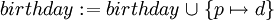
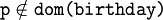

A First Example: The Birthday Book (Rodin Tutorial)
From Event-B
To begin with, let us start with a simple model of a “birthday book”, similar to the one in the Z Notation Reference Manual1. This little book is a simple tool that can be used to keep birthdays of different people. All we can do with it is writing people’s birthdays into it. So, the initial model only has one event. We create the model as follows:
The Event-B Perspective
- Start Rodin. You should be directed automatically to the Event-B perspective. If this does not happen, you will have to change to this perspective manually (Eclipse help describes how this is done).
- Create a new Project as described in section 1.3 of the Manual. Name the project BirthdayBook.
- Create a new Context Component named BirthdayBook_C0 in the Project you created. This can be done similarly to creating the new project. (See also Section 1.8 of the Manual)
- In this model, we are not interested in the specific structure of the date. All we want this context to contain are two carrier sets, one for dates and one for people. We will call them DATE and PERSON. You can add them to the context as described in section 2.1 of the manual. Now either press Ctrl+S or click on the save Icon to save the context.
- Now, we need to create a Machine Component. Proceed as you did to create the Context Component, just choose “Machine” this time. Give the Machine Component the name BirthdayBook_0. Once the component is created, a window with the machine’s dependencies appears. Add BirthdayBook_C0 to the seen contexts so that you can access the carrier sets.
- We need a variable that reflects the contents of the book. We call it “birthday’. The following information on the variable can be entered into the New Variable Wizard (Manual Section 3.2.1), which can be accessed by an icon on the tool bar. Since every person has at most one entry in the birthday book, but not every person has an entry in it, “birthday” should be a partial function from PERSON to DATE. At initialization, we want the book to be empty. (The symbol for partial functions can be written by typing in +-> . Section 8 of the Manual contains all on how to write Event-B symbols in ASCII.)
- Last, we create the event. Open the New Event Wizard (as seen in Section 3.5.1 of the Manual) on the top tool bar. Name the new Event AddBirthday. It has two parameters, p and d, where p is a PERSON and d is a DATE (enter these as guards). As action, write  (Remember, Section 8 of the manual explains how to write Event-B symbols). Now, save the machine. If you have done everything correctly, the type checker should not return anything to the problems window at the bottom of the screen. It appears that we have successfully created a model of the birthday book. But have we?
The Proving Perspective
Now, we switch to the proving perspective. You see several windows on the screen:
- The Proof Obligation Explorer (Section 5 of the Manual): Here you can browse through proof obligations. As you can see, BirthdayBook_C0 has no proof obligation and BirthdayBook_0 has two. The A in the icons of the obligations means that the automatic prover attempted both obligations. The green icon next to the first proof obligation indicates that it already has been proved, and the red icon next to the second proof obligation tells that the proof is not yet completed. Proof obligations can have three colors, red, green and blue. The blue color means that the proof has been reviewed, meaning that it has been discharged without proof by the user. Click on the second prove obligation to display the proof. This fills a couple of other windows.
- The Proof Tree (Section 6.2 of the Manual): Here you see a tree of the proof that you have done so far and your current position in it. By clicking in the tree, you can navigate inside the proof. Currently, you have not started with the proof yet, so there is no new place to move to.
- The Proof Control (Manual, section 6.4): This is where you perform interactive proofs.
- The Selected Hypothesis window (Manual, section 6.7): The hypothesis that are currently being used for the proof are displayed here. You can add hypothesis into it from the Search Hypothesis window and from the Cached Hypothesis window(See section 6.4 in the Manual on how to open these windows).
- The goal window (Manual, section 6.3): This window shows what needs to be proved at the current position inside the proof tree. Currently we need to show that birthday is still a partial function from PERSON to DATE if it is extended by an entry.
There is no way to prove the goal if a birthday is already entered into the book for a certain person. So, our event needs an additional guard that restricts p to people for whom there is no entry yet in the book. This can be done in the proving perspective. Just switch to the machine and add the additional guard () using the editor (On adding guards: Manual, section 3.5.2). If you save the document now, you will see that the auto-prover can conclude.
Congratulations! You have built your first model with Rodin.
Footnotes
- The Z Notation Reference Manual can be found at http://spivey.oriel.ox.ac.uk/mike/zrm/index.html